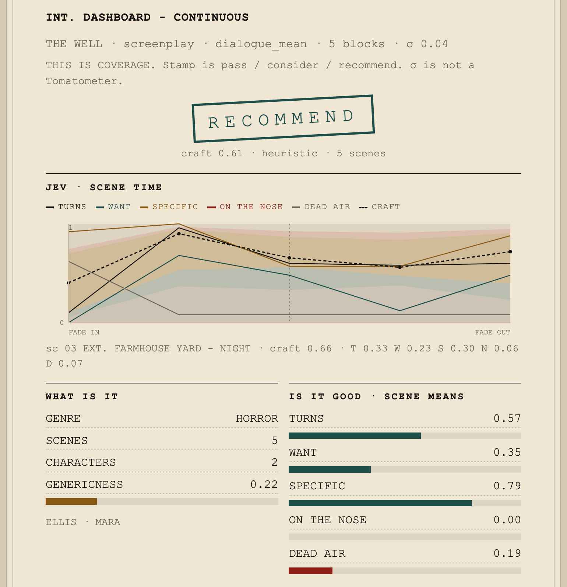
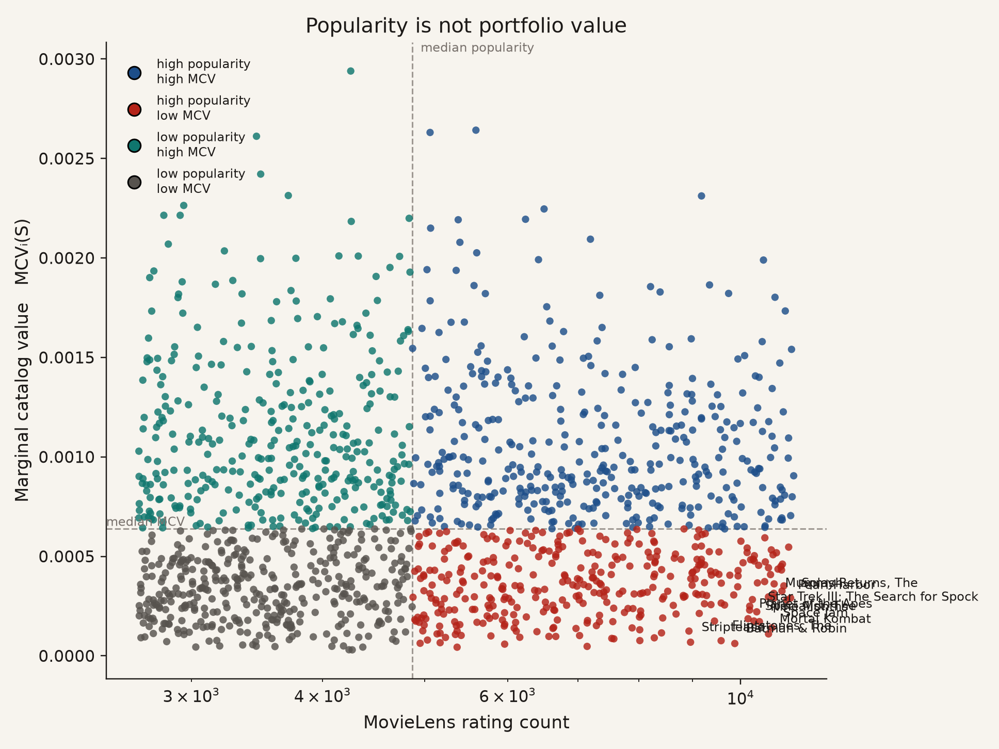
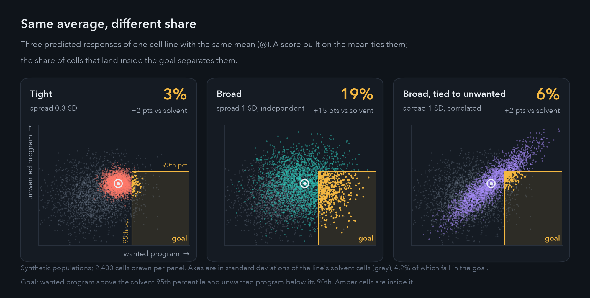
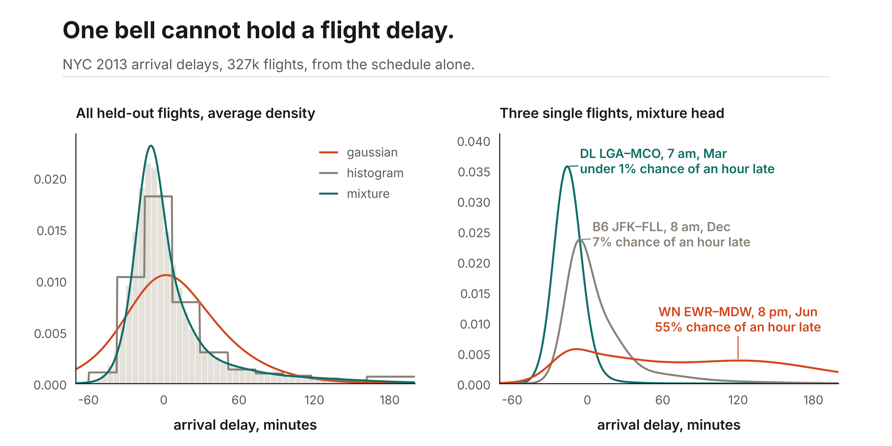
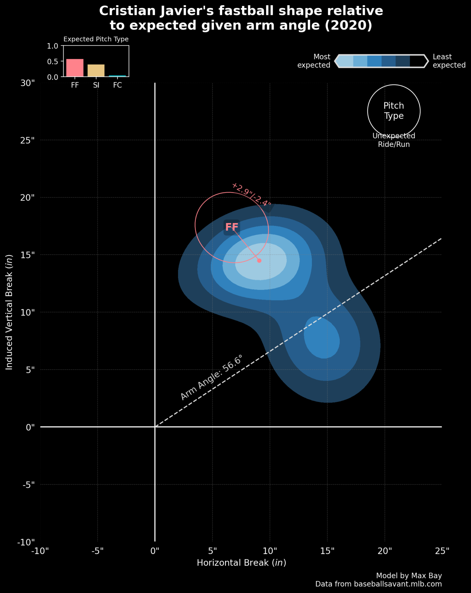
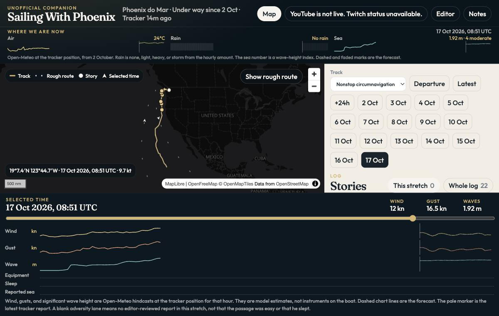

I’m a data scientist and ML engineer, currently a Senior Quantitative Analyst at the Los Angeles Dodgers, where I own the quantitative analysis team’s pitching products and core hitting models. I’m full stack on those models, from design through training, evaluation and nightly deployment. I’ve spent over 10 years building probabilistic and generative models, first as a doctoral student in computational neuroscience, then on the R&D teams of two major league baseball organizations. Between the two clubs, I spent most of 2024 as an AI engineer at PortfolioT, building autonomous LLM agents, knowledge graphs, and chat systems for startups. I’m most interested in open problems where the right approach isn’t settled yet, and I like working directly with the people who use my models. At the Dodgers, that means coaches and executives.
My wife and I have two wonderful kids. Outside of work, I love hiking, playing guitar, solving Rubik’s cubes of all shapes and sizes, and playing chess.
Education
PhD, Neuroscience, University of Southern California, 2022.
BSc, Psychology and Neuroscience, Syracuse University, 2011.
Public projects

Studios decide whether to develop a screenplay long before anyone sees the film. Most attempts to predict a film’s reception lean on information that only exists after release, such as cast, marketing, reviews, and awards. A model trained on those looks accurate and is useless on an unmade script.
This tool works from the script alone and answers two separate questions. For who the film is for, it embeds the text into a taste space learned from MovieLens ratings, which returns comparable films, the odds that audiences split into lovers and haters, and a posterior over critic and audience scores instead of a single number. For whether the pages are any good, a language model reads each scene and checks specific craft questions, such as whether the situation changes by the end and whether a character wants something, and those checks roll up to a pass, consider, or recommend.

Streaming services often value titles by popularity, but a popular film adds little to a catalog that already serves the same viewers. What a title is worth depends on what else is in the catalog.
The model learns each viewer as a mix of tastes from MovieLens ratings and places every title in the same space. A catalog’s value is how well its titles cover those tastes, and a title’s value is the change in coverage when it is added or removed, reported as a distribution rather than a point estimate. I mapped the US catalogs of Netflix, Disney+, Prime Video, Max, and Hulu onto that space and used the estimates to build catalogs title by title. The figure shows that popularity and added value often disagree.

Many cancer drugs are meant to push cells into one state, such as stopping division, without setting off the general stress response that almost any toxic compound triggers. Cells in the same dish respond unevenly, so a drug that moves every cell a little and a drug that moves a fifth of the cells all the way can have the same average effect. When the goal is a state, the number that matters is the share of cells that reach it.
This project ranks drugs by that share. Using single-cell RNA data from Tahoe-100M, a conditional normalizing flow predicts the full population of treated cells from a cell line’s untreated cells, the drug’s chemical structure, and the dose, then counts how many land in the target state. Rankings are locked before the held-out wells are opened. So far a simpler baseline still ranks best, and the flow has not cleared the bar I set for it. The three clouds above illustrate the problem; they are not model output.

If a table only needs one number per row, a gradient-boosted tree is hard to beat. A tree regressor predicts a mean. An interval takes another model per quantile, or a fixed-width normal around that mean, and neither is a density you can evaluate or sample.
Ashlar fits small JAX and Equinox models to tables and to series. You call fit and predict. Numeric columns are imputed and scaled, and string columns become learned vectors, with a defined vector for a category that never appeared in training. A regression or a forecast can return the whole distribution from one fit: a Gaussian, a mixture, a spline flow, a histogram, or a set of quantiles. On 2013 New York flights, from the schedule alone, the single bell is too wide at the peak and too thin in the tail, and the mixture’s shape changes from flight to flight.

This contains a collection of code (in various forms) focused on baseball problems that interest me.

I've been following Oliver Widger’s voyages on Phoenix since his journey to Hawaii. Now he's circumnavigating the globe. This fan site puts his videos, locations, and travel conditions in one place with full history. Selecting an hour moves the map, the posts, and the weather charts together. Wind, gusts, and wave height are reconstructed at his reported position and kept separate from anything he said. It is unofficial and not affiliated with him, the voyage, or PredictWind.